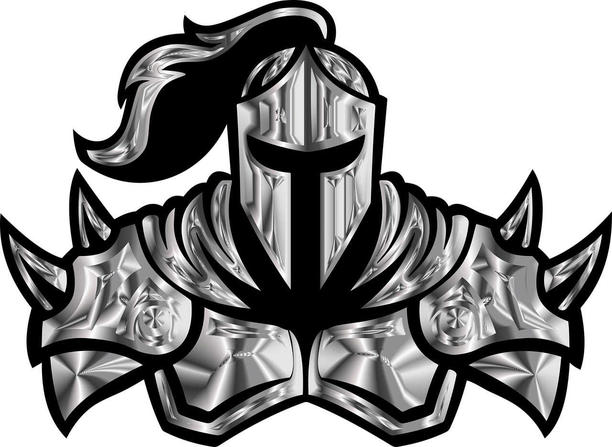

VIKINGS VS SAXONS
A turn-based game where two
players control
armies of Vikings
and Saxons. The objective of
the game is to destroy the enemy army before they destroy yours.
Here are the instructions for playing the game:
Here are the instructions for playing the game:
Who goes first?
Every soldier will spawn with health between 150 and 175, chosen randomly. Which ever army has less total health, plays first.
Every soldier will spawn with health between 150 and 175, chosen randomly. Which ever army has less total health, plays first.
Rolling dice:
On your turn, roll 2 dices from 1 to 6. The 2 numbers are then multiplied and that will be the amount of gold you receive. For example, if you roll a 3 and a 4, you receive 12 gold. If the 2 dices are the same number, the amount of gold you receive is doubled. For example, if you roll a 5 and a 5, you receive 50 gold.
On your turn, roll 2 dices from 1 to 6. The 2 numbers are then multiplied and that will be the amount of gold you receive. For example, if you roll a 3 and a 4, you receive 12 gold. If the 2 dices are the same number, the amount of gold you receive is doubled. For example, if you roll a 5 and a 5, you receive 50 gold.
Spending gold:
You can choose to spend your gold on attacking the enemy army or purchasing items from the shop. If you don't have enough gold for either, you will have to end your turn.
You can choose to spend your gold on attacking the enemy army or purchasing items from the shop. If you don't have enough gold for either, you will have to end your turn.
Attack:
If you choose to attack, your soldiers will start battling the enemy army. The battle ends once all enemy soldiers have been attacked once. Keep in mind that once you initiate the attack, your turn will end instantly after the battle, and you will not be able to buy things from the shop untill next turn.
If you choose to attack, your soldiers will start battling the enemy army. The battle ends once all enemy soldiers have been attacked once. Keep in mind that once you initiate the attack, your turn will end instantly after the battle, and you will not be able to buy things from the shop untill next turn.
Shop:
If you choose to visit the shop, you can spend your gold on healing , reinforcements or other helpful items that will aid you in battle. Once you've purchased your items, you can still choose to attack, if you have enough gold.
If you choose to visit the shop, you can spend your gold on healing , reinforcements or other helpful items that will aid you in battle. Once you've purchased your items, you can still choose to attack, if you have enough gold.
Battle:
During battle, the armies will clash on the battlefield, soldiers will deal damage to each other, based on their damage.
During battle, the armies will clash on the battlefield, soldiers will deal damage to each other, based on their damage.
End of the game:
The game ends when one army is destroyed. The player with the remaining army wins the game.
The game ends when one army is destroyed. The player with the remaining army wins the game.

Every solder has:
Random damage between 15-25
Critical chance of 5%
Critical damage of 2.5x
Block chance of 30%
If blocking, damage reduction of 20%
Evasion chance of 5%
Vikings have a berserk method that doubles their damage and increase evasion by 20%, but
disables
their
block chance, and reduces
their health by half. This occurs when a Viking drops below 50 health, and
will double his damage for every turn he stays alive, for a maximum of 2 turns.
Saxons have a 5% chance on every attack to poison a target which deals 5
damage over 5 seconds.